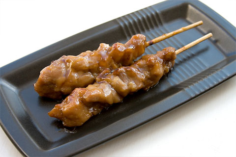

Please let us know if you have any specific dietary requirements or food allergies.
Appetisers/Side Dishes
Menu Item
Description
Preview
Spring Rolls (v)
Classic vegetable Spring Rolls
Honey BBQ Spare Ribs
Spare Ribs Drizzled in Honey BBQ Sauce
Ebi Fried
Breadcrumbed Prawns
Tempura Prawns
Edamame (v)
Green Soya Beans
Miso Soup (v)
Takoyaki
Japanese Octopus Balls
Yubamaki
Tofu roll filled with vegetables
Gyoza Dumplings
Gyoza filled with chicken and vegetables
Yakitori
Skewered chicken with Teriyaki sauce

Japanese Curry Dishes
Menu Item
Description
Preview
Fried Chicken Curry
Breadcrumb Coated Chicken Curry
Beef Curry
Prawn Curry
Breadcrumb Coated Pork Curry
Tofu Curry (v)
Pumpkin Curry (v)
Donburi Dishes (Rice Bowl Dishes)
Menu Item
Description
Preview
Teriyaki Chicken Don
Chicken in Sweet Soy Sauce Marinade
Chicken Nanban Don
Chicken marinated in a sweet and sour sauce
Pork Nanban Don
Breadcrumbed pork marinated in a sweet and sour sauce
Prawn Nanban Don
Prawn marinated in a sweet and sour sauce
Tori Chilli Don
Chicken in a spicy tangy sauce
Buta Chilli Don
Breadcrumbed pork in a spicy tangy sauce
Ebi Chilli Don
Prawn in a spicy tangy sauce
Tofu Chilli Don (v)
Tofu in a spicy tangy sauce
Oyako Don
Soya poached egg with fried chicken
Katsu Don
Soya poached egg with breadcrumb coated pork
Tofu Don (v)
Soya poached egg with tofu
Pork Kimchi Don
Pork and Chinese Leaf in a spicy sour sauce
Sesame Chicken Don
Chicken cooked with a sesame infuse BBQ sauce
Sesame Beef Don
Beef cooked with a sesame infused BBQ sauce
Sesame Pork Don
Pork cooked with a sesame infused BBQ sauce
Sesame Prawn Don
Prawn cooked with a sesame infused BBQ sauce
Sesame Tofu Don (v)
Tofu cooked with a sesame infused BBQ sauce
Chicken Shouga Yaki Don
Chicken Marinated with honey, ginger and soya sauce
Beef Shouga Yaki Don
Beef Marinated with honey, ginger and soya sauce
Pork Shouga Yaki Don
Pork Marinated with honey, ginger and soya sauce
Prawn Shouga Yaki Don
Prawn Marinated with honey, ginger and soya sauce
Tofu Shouga Yaki Don (v)
Tofu Marinated with honey, ginger and soya sauce
Yakisoba/Noodles
Menu Item
Description
Preview
Chicken Stir Fried Noodles
Beef Stir Fried Noodles
Pork Stir Fried Noodles
Prawn Stir Fried Noodles
Vegetable Stir Fried Noodles (v)
Special Mixed Stir Fried Noodles
Chicken, Beef & Prawn
Yakimeshi/Rice
Menu Item
Description
Preview
Chicken Stir Fried Rice
Beef Stir Fried Rice
Pork Stir Fried Rice
Prawn Stir Fried Rice
Vegetable Stir Fried Rice (v)
Special Mixed Stir Fried Rice
Checken, Beef & Prawn
Salad Bowls
Menu Item
Description
Preview
Chicken Salad
Pork Salad
Prawn Salad
Tofu Salad (v)
Cold Drinks
Menu Item
Description
Preview
Canned Drinks
Pepsi. Diet Pepsi, 7up, Cherry 7up, Tango Orange and Apple, Rio
Juice
Orange or Apple
Still Mineral Water
Mugi Cha
Cold Japanese Tea
Hot Drinks
Menu Item
Description
Preview
Tea
Coffee
Hot Chocolate
Mugi Cha
Hot Japanese Tea
Special Dishes
Menu Item
Description
Preview
Yaki Udon
Beef Udon
Kimchi Udon
Mabo Tofu Don
Yakiniku Don
Unagi Don